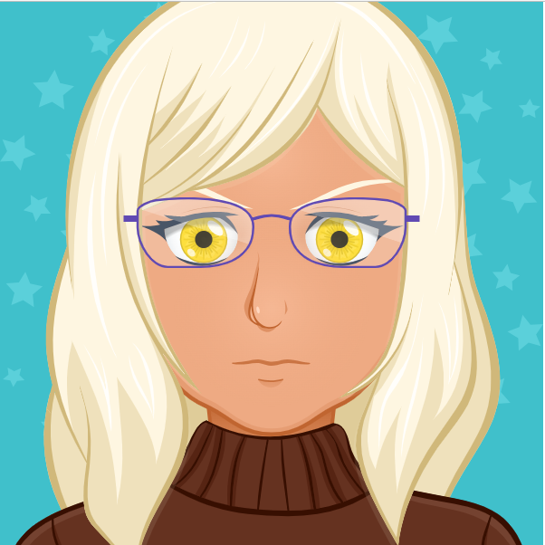

j
RAULT Brieuc
18 ans
1 ère année en BUT informatique
j
A propos de moi
Je suis étudiant en première année d'informatique au BUT de Lannion, Je suis intéressé par un poste de développeur en alternance Je veux pouvoir profiter de ma passion de l'informatique en travaillant avec une équipe et pouvoir me montrer utile dans une entreprise
Formations
BAC général spécialité NSI et option math complémentaire BUT informatique première année
Télécharger le CVCompétence 1
Réaliser un développement d'application
Pendant ma première année de BUT informatique, nous devions réaliser avec le language C un jeu de puissance 4 en autonomie.
o
Compétence 2
Optimiser des applications informatiques
Avec une autre personne, on devait créer un programme optimisé qui devait fonctionner tout seul et qui pouvais affronter d'autre programme
o

Compétence 3
Administrer des systèmes informatiques communicants complexes
Avec une équipe de 4 personnes, nous avions réalisé une automatisation d'installation d'un poste de développement. Le but étant qu'une société puisse utiliser une série d'actions permettant à ses employés de tous posséder un environnement informatique identique pour travailler efficacement. Cette requête a pu aboutir via l'utilisation de Docker et du langage php
o
Gérer des données de l'information
Description
J'ai réalisé avec 2 autres personnes une base de données via l'utilisation du langage SQL. Nous avons pour cela fait la conception de la base et des données qu'elle allait comporter, nous l'avons implementée, nous l'avons remplie et interrogée.
o
Compétence 5
Conduire un projet
Dans un groupe de quatre étudiants, j'ai participé à la création d'un site web. Nous avons au cours de plusieurs semaines créé la maquette de nos pages, et les avons codées en Html, CSS, et Javascript.
o
Compétence 6
Travailler dans une équipe informatique
En tant que premier projet de mes études d'informatique, J'ai eu à présenter le lien qui existait entre l'entreprise pétrolier Total et sa Responsablité sociale en tant qu'entreprise (RSE). Son activité impacte fortement l'environnement du fait de son utilisation d'énérgie fossile, moi et mon groupe avons confronter Total et Greenpeace car ils étaient en désacord pour l'engagement evironnementale de Total .
o
u
Contact :
E-mail : brieuc.rault@etudiant.univ-rennes.fr
Téléphone : 07 83 09 30 12
Location : Lannion, France
2023 Brieuc RAULT